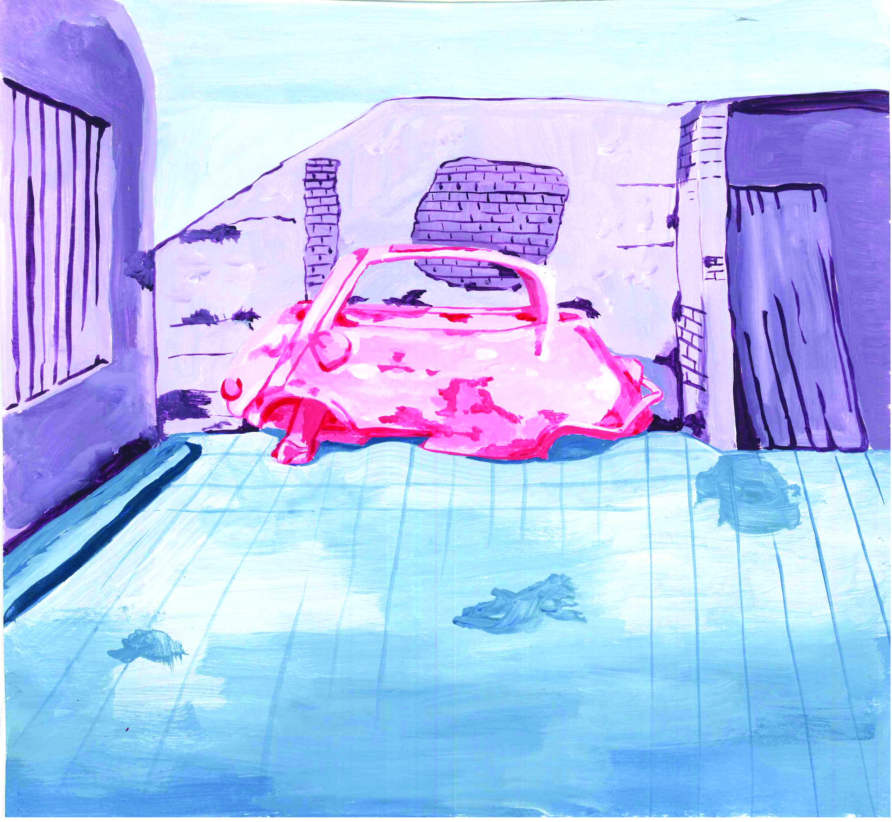
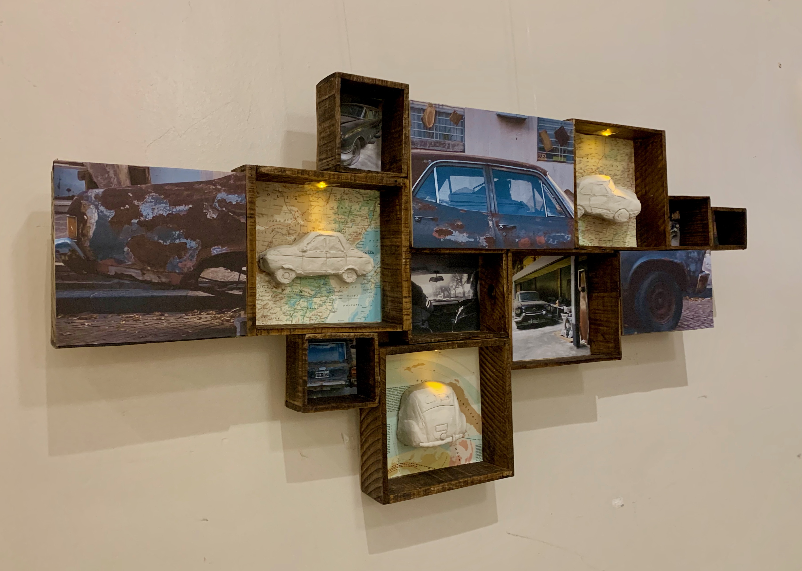

Acrilicos

Cuadro
Un día me encontré que tenía un archivo de fotografías urbanas que realicé durante algunos años sobre autos abandonados, nació la idea o más bien la duda de por qué la gente abandona su auto. Este proyecto busca mostrar por medio de ilustraciones, pinturas y una instalación una poética en el abandonado; porque hurgar entre los autos viejos y abandonados es explorar por qué fue descartado o no tener valor. Somos pocos los que creemos que en el medio del cachivache habrá oro, un poco de azul ultramar o simplemente el juguete enterrado de la película de Orson Wells. La estructura de estos autos estaban abandonados, en decadencia entonces qué pasó que se transformó en un refugio de viajes al pasado y al futuro, y en un presente lleno de nostalgias y amor. Quizás representar un fragmento de ellos en el tiempo, solo nos hace pensar... ¿Qué pasó antes? ¿Cómo llegó hasta ahí? ¿Quiénes lo usaron, lo habrán disfrutado? ¿En un auto ocurren secretos? ¿Fue el mejor espacio para hablar a solas con uno mismo? ¿Fue un espacio seguro y feliz? El abandono, ¿Es un acto consciente?. La naturaleza donde todas las combinaciones son posibles.